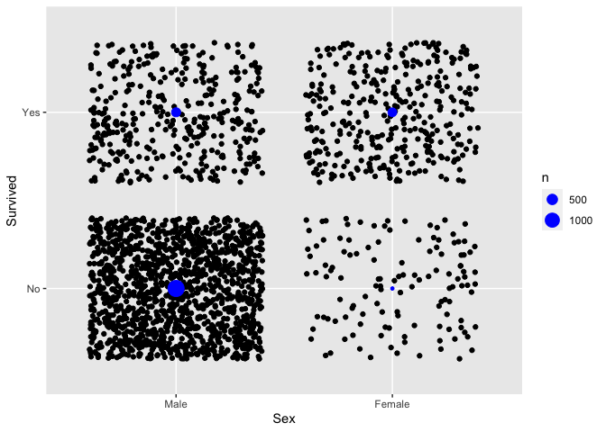
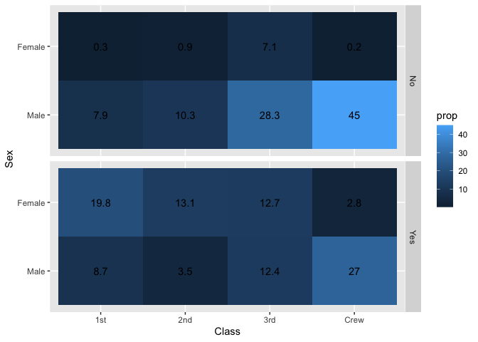
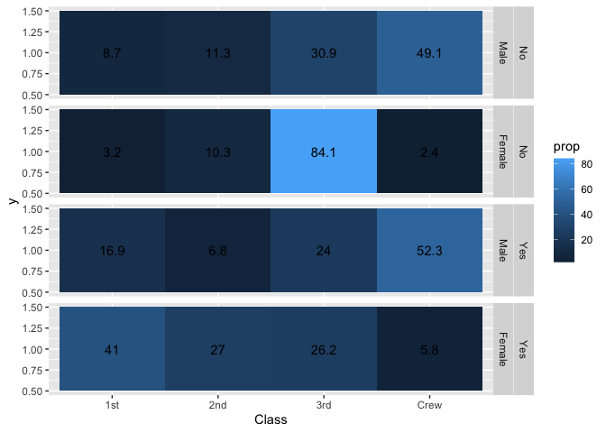
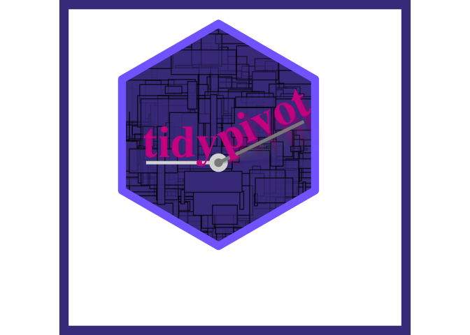

library(tidypivot)note: see original discussion here: https://evamaerey.github.io/mytidytuesday/2022-02-14-tables/tables.html and thoughtful contributions from @shannonpileggi and @brshallow https://github.com/EvaMaeRey/mytidytuesday/issues/3
library(tidyverse)
library(magrittr)
Titanic %>%
data.frame() %>%
uncount(weights = Freq) ->
tidy_titanic ; tidy_titanic %>% head()
#> Class Sex Age Survived
#> 3 3rd Male Child No
#> 3.1 3rd Male Child No
#> 3.2 3rd Male Child No
#> 3.3 3rd Male Child No
#> 3.4 3rd Male Child No
#> 3.5 3rd Male Child No
Titanic %>%
data.frame() ->
flat_titanic ; flat_titanic %>% head()
#> Class Sex Age Survived Freq
#> 1 1st Male Child No 0
#> 2 2nd Male Child No 0
#> 3 3rd Male Child No 35
#> 4 Crew Male Child No 0
#> 5 1st Female Child No 0
#> 6 2nd Female Child No 0Step 0. Some observations
ggplot2: user needs to describe layout of table
you can make a visual pivot table in ggplot2; analyst job is to describe the form. How will it look
specify 3 things - start with visual layout
- specify x
- specify y
- specify count type geom

With existing pivot tools, description isn’t so visual
- specify vars
- specify aggregation
- specify visual arrangement (names from?) <- this comes last
tidy_titanic %>%
group_by(Sex, Survived) %>%
summarize(count = n()) %>%
pivot_wider(names_from = Survived,
values_from = count)
#> # A tibble: 2 × 3
#> # Groups: Sex [2]
#> Sex No Yes
#> <fct> <int> <int>
#> 1 Male 1364 367
#> 2 Female 126 344Step 1a. Make Functions to allow description of final table, pivot_count and pivot_calc
x argument is horizontal elements (columns) and y is vertical elements (rows)
pivot_count_script <- readLines("./R/pivot_count.R")#' Title
#'
#' @param data
#' @param cols
#' @param rows
#' @param pivot
#'
#' @return
#' @export
#'
#' @examples
pivot_count <- function(data, cols = NULL, rows = NULL, pivot = T, wt = NULL){
cols_quo <- rlang::enquo(cols)
cols_quo <- rlang::enquo(cols)
grouped <- data %>%
dplyr::group_by(dplyr::across(c({{cols}}, {{rows}})), .drop = FALSE)
summarized <- grouped %>%
dplyr::summarize(value = dplyr::n())
arranged <- summarized# %>%
# tidyr::complete(dplyr::across(c({{cols}}, {{rows}}))) %>%
# dplyr::mutate(value = tidyr::replace_na(.data$value, 0)) %>%
# dplyr::arrange(dplyr::across(c({{rows}}, {{cols}})))
ungrouped <- arranged %>%
dplyr::ungroup()
tidy <- ungrouped
# do not pivot if argument pivot false or no columns specified
if(pivot == F | rlang::quo_is_null(cols_quo)){
tidy %>%
dplyr::rename(count = .data$value)
# otherwise pivot by columns
}else{
tidy %>%
tidyr::pivot_wider(names_from = {{cols}})
}
# browser()
}pivot_calc_script <- readLines("./R/pivot_calc.R")#' Title
#'
#' @param data
#' @param y
#' @param x
#' @param pivot
#'
#' @return
#' @export
#'
#' @examples
pivot_calc <- function(data, rows = NULL, cols = NULL,
value = NULL,
fun = sum,
pivot = T #ifelse(is.null(x),F,T)
){
#
# y00 <- enquo(y00)
# y0 <- enquo(y0)
# y <- enquo(y)
# x <- enquo(cols)
# value <- enquo(value)
tidy <- data %>%
dplyr::group_by(across(c({{cols}}, {{rows}})), .drop = FALSE) %>%
dplyr::summarize(value = fun({{value}})) %>%
dplyr::ungroup()
if(pivot){#or x is null
tidy %>%
tidyr::pivot_wider(names_from = {{cols}})
}else{
tidy
}
}Step 1b. Using those functions
# rows and cols
tidy_titanic %>%
pivot_count(rows = Survived, cols = Sex)
#> # A tibble: 2 × 3
#> Survived Male Female
#> <fct> <int> <int>
#> 1 No 1364 126
#> 2 Yes 367 344
# cols only
tidy_titanic %>%
pivot_count(cols = Sex)
#> # A tibble: 1 × 2
#> Male Female
#> <int> <int>
#> 1 1731 470
# rows only
tidy_titanic %>%
pivot_count(rows = Survived)
#> # A tibble: 2 × 2
#> Survived count
#> <fct> <int>
#> 1 No 1490
#> 2 Yes 711
# two rows and col
tidy_titanic %>%
pivot_count(rows = c(Survived, Class), cols = Sex)
#> # A tibble: 8 × 4
#> Survived Class Male Female
#> <fct> <fct> <int> <int>
#> 1 No 1st 118 4
#> 2 No 2nd 154 13
#> 3 No 3rd 422 106
#> 4 No Crew 670 3
#> 5 Yes 1st 62 141
#> 6 Yes 2nd 25 93
#> 7 Yes 3rd 88 90
#> 8 Yes Crew 192 20
# two rows and col and contains zero counts
tidy_titanic %>%
pivot_count(rows = c(Survived, Class), cols = c(Sex, Age))
#> # A tibble: 8 × 6
#> Survived Class Male_Child Male_Adult Female_Child Female_Adult
#> <fct> <fct> <int> <int> <int> <int>
#> 1 No 1st 0 118 0 4
#> 2 No 2nd 0 154 0 13
#> 3 No 3rd 35 387 17 89
#> 4 No Crew 0 670 0 3
#> 5 Yes 1st 5 57 1 140
#> 6 Yes 2nd 11 14 13 80
#> 7 Yes 3rd 13 75 14 76
#> 8 Yes Crew 0 192 0 20
# two rows and col and contains zero counts
tidy_titanic %>%
pivot_count(rows = c(Survived, Class), cols = c(Sex, Age), pivot = F)
#> # A tibble: 32 × 5
#> Sex Age Survived Class count
#> <fct> <fct> <fct> <fct> <int>
#> 1 Male Child No 1st 0
#> 2 Male Child No 2nd 0
#> 3 Male Child No 3rd 35
#> 4 Male Child No Crew 0
#> 5 Male Child Yes 1st 5
#> 6 Male Child Yes 2nd 11
#> 7 Male Child Yes 3rd 13
#> 8 Male Child Yes Crew 0
#> 9 Male Adult No 1st 118
#> 10 Male Adult No 2nd 154
#> # … with 22 more rows
# count all
tidy_titanic %>%
pivot_count()
#> # A tibble: 1 × 1
#> count
#> <int>
#> 1 2201
# for fun organize like it will appear visually in code
tidy_titanic %>%
pivot_count( cols = Sex,
rows = c(Survived, Class) )
#> # A tibble: 8 × 4
#> Survived Class Male Female
#> <fct> <fct> <int> <int>
#> 1 No 1st 118 4
#> 2 No 2nd 154 13
#> 3 No 3rd 422 106
#> 4 No Crew 670 3
#> 5 Yes 1st 62 141
#> 6 Yes 2nd 25 93
#> 7 Yes 3rd 88 90
#> 8 Yes Crew 192 20After examining your table you might actually want to have the calculation in long form (for use in something like ggplot2). This is what pivot = F is for!
tidy_titanic %>%
pivot_count(cols = Sex, rows = Survived, pivot = F)
#> # A tibble: 4 × 3
#> Sex Survived count
#> <fct> <fct> <int>
#> 1 Male No 1364
#> 2 Male Yes 367
#> 3 Female No 126
#> 4 Female Yes 3441b. pivot_calc using pivot calc function for non count aggregation
just for fun arrange the code how the table will look
flat_titanic %>%
pivot_calc( cols = Sex,
rows = Survived, value = Freq, fun = sum)
#> # A tibble: 2 × 3
#> Survived Male Female
#> <fct> <dbl> <dbl>
#> 1 No 1364 126
#> 2 Yes 367 344
flat_titanic %>%
pivot_count(cols = Sex,
rows = Survived, wt = Freq)
#> # A tibble: 2 × 3
#> Survived Male Female
#> <fct> <int> <int>
#> 1 No 8 8
#> 2 Yes 8 8Issue: For this case, we should probably use pivot_count and allow for a wt argument.
1b style. use another tool to style
goal of functions is not to style - just to make calculation faster by using a visually driven API
tidy_titanic %>%
pivot_count(cols = Sex, rows = c(Survived, Class)) %>%
group_by(Class) %>%
gt::gt()| Survived | Male | Female |
|---|---|---|
| 1st | ||
| No | 118 | 4 |
| Yes | 62 | 141 |
| 2nd | ||
| No | 154 | 13 |
| Yes | 25 | 93 |
| 3rd | ||
| No | 422 | 106 |
| Yes | 88 | 90 |
| Crew | ||
| No | 670 | 3 |
| Yes | 192 | 20 |
tidy_titanic %>%
pivot_count(cols = Sex, rows = c(Survived, Class, Age)) %>%
group_by(Age) %>%
gt::gt()| Survived | Class | Male | Female |
|---|---|---|---|
| Child | |||
| No | 1st | 0 | 0 |
| No | 2nd | 0 | 0 |
| No | 3rd | 35 | 17 |
| No | Crew | 0 | 0 |
| Yes | 1st | 5 | 1 |
| Yes | 2nd | 11 | 13 |
| Yes | 3rd | 13 | 14 |
| Yes | Crew | 0 | 0 |
| Adult | |||
| No | 1st | 118 | 4 |
| No | 2nd | 154 | 13 |
| No | 3rd | 387 | 89 |
| No | Crew | 670 | 3 |
| Yes | 1st | 57 | 140 |
| Yes | 2nd | 14 | 80 |
| Yes | 3rd | 75 | 76 |
| Yes | Crew | 192 | 20 |
Back to Step 0, Observations: use existing tools to calculate proportions is many step process
feels like lots of gymnastics… a vis first approach is what we are after
tidy_titanic %>%
group_by(Sex, Survived) %>%
summarize(value = n()) %>%
group_by(Sex) %>%
mutate(prop = value/sum(value)) %>%
select(-value) %>%
pivot_wider(values_from = prop, names_from = Sex)
#> # A tibble: 2 × 3
#> Survived Male Female
#> <fct> <dbl> <dbl>
#> 1 No 0.788 0.268
#> 2 Yes 0.212 0.732Step 2a. build a function where visual arrangement leads.
pivot_prop_script <- readLines("./R/pivot_prop.R")#' Title
#'
#' @param data
#' @param y
#' @param y0
#' @param y00
#' @param x
#' @param value
#' @param fun
#' @param within
#' @param within2
#' @param pivot
#' @param percent
#' @param round
#'
#' @return
#' @export
#'
#' @examples
pivot_prop <- function(data, rows = NULL, cols = NULL,
value = NULL, fun = sum,
within = NULL, pivot = T,
percent = T, round = F){
# y00 <- enquo(y00)
# y0 <- enquo(y0)
# x <- enquo(cols)
# y <- enquo(y)
# within <- enquo(within)
# within2 <- enquo(within2)
cols_quo <- enquo(cols)
value_quo <- enquo(value)
if(rlang::quo_is_null(value_quo)){
data <- data %>% dplyr::mutate(value = 1)
}else{
data <- data %>%
dplyr::mutate(value = fun({{value}}))
}
data %>%
dplyr::group_by(across(c({{rows}}, {{cols}})), .drop = FALSE) %>%
dplyr::summarize(value = fun(value)) %>%
dplyr::group_by(across(c({{within}}))) %>%
dplyr::mutate(prop = (value/sum(value)*ifelse(percent, 100, 1)) %>% round(1)) %>%
dplyr::select(-value) %>%
dplyr::ungroup() ->
tidy
if(pivot){
tidy %>%
tidyr::pivot_wider(values_from = prop, names_from = {{cols}})
}else{
tidy
}
}Step 2b. using the pivot_prop
tidy_titanic %>%
pivot_prop(rows = Survived, cols = Class, within = Class)
#> # A tibble: 2 × 5
#> Survived `1st` `2nd` `3rd` Crew
#> <fct> <dbl> <dbl> <dbl> <dbl>
#> 1 No 37.5 58.6 74.8 76
#> 2 Yes 62.5 41.4 25.2 24
tidy_titanic %>%
pivot_prop(rows = c(Survived, Sex),
cols = Class,
within = Survived)
#> # A tibble: 4 × 6
#> Survived Sex `1st` `2nd` `3rd` Crew
#> <fct> <fct> <dbl> <dbl> <dbl> <dbl>
#> 1 No Male 7.9 10.3 28.3 45
#> 2 No Female 0.3 0.9 7.1 0.2
#> 3 Yes Male 8.7 3.5 12.4 27
#> 4 Yes Female 19.8 13.1 12.7 2.8
tidy_titanic %>%
pivot_prop(rows = c(Survived, Sex),
cols = Class,
within = c(Survived, Sex))
#> # A tibble: 4 × 6
#> Survived Sex `1st` `2nd` `3rd` Crew
#> <fct> <fct> <dbl> <dbl> <dbl> <dbl>
#> 1 No Male 8.7 11.3 30.9 49.1
#> 2 No Female 3.2 10.3 84.1 2.4
#> 3 Yes Male 16.9 6.8 24 52.3
#> 4 Yes Female 41 27 26.2 5.8tidy_titanic %>%
pivot_prop(rows = c(Survived, Sex),
cols = Class,
within = Survived, pivot = F) %>%
ggplot() +
aes(x = Class, y = Sex) +
facet_grid(rows = vars(Survived)) +
geom_tile() +
aes(fill = prop) +
geom_text(aes(label = prop %>% round(3)))
tidy_titanic %>%
pivot_prop(rows = c(Survived, Sex),
cols = Class,
within = c(Survived, Sex), pivot = F) %>%
ggplot() +
aes(x = Class, y = 1) +
facet_grid(rows = vars(Survived, Sex)) +
geom_tile() +
aes(fill = prop) +
geom_text(aes(label = prop %>% round(3)))
Reflections, questions, issues
- Does this already exist?
-
How can API improve? possibly rows = vars(y00, y0, y), cols = vars(x). and within = vars(?, ?) This requires more digging into tidy eval. What about multiple x vars?These changes implemented thanks to Brian and Shannon -
How can internals improve? Also tidy eval is old I think. defaults for missing data.Using new {{}} tidy eval within and across, and rlang::quo_is_null() thanks to Brian - What about summary columns, rows. Column totals, etc. Maybe not very tidy… maybe allowed w/ error message.
- Ideas about different API - more like ggplot2, where you would specify new dimensions of your table after piping. Would require function to create non-data frame type object. Not sure about consistency dplyr/tidyr tools. These just return dataframes/tibble. I think being consistent with that expectation might be a good thing. Also less challenging to implement.
